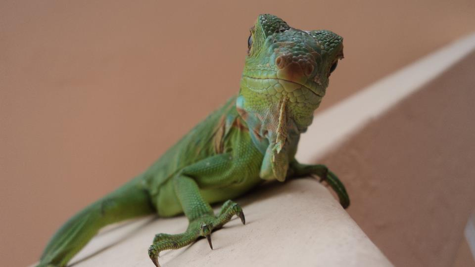
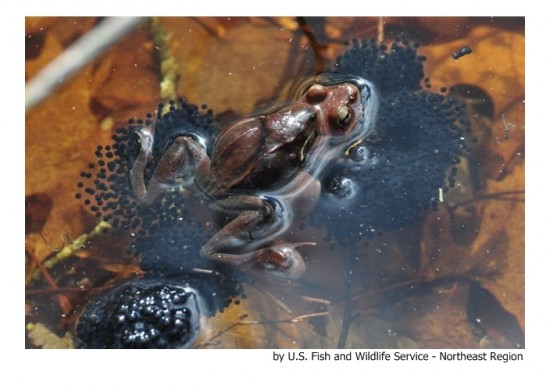
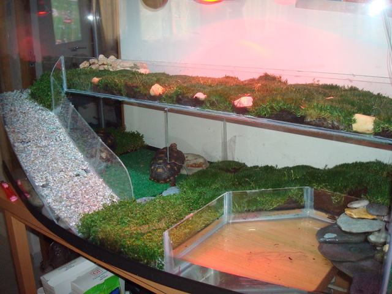

REPTILES

A excepción de unas pocas especies antropófilas, a un observador inexperto puede resultarle muy difícil encontrar anfibios y reptiles en sus primeras salidas al campo. La razón es que estos animales suelen ser crípticos, discretos y más bien tímidos, y además dejan pocos rastros. No hace falta decir que la observación de aves suele se incomparablemente más fructífera en cualquier expedición naturalista. Como consuelo, podemos decir que los mamíferos son todavía más difíciles de ver.
No obstante, con una serie de buenas recomendaciones sobre la época y los lugares apropiados y sobre las estrategias de aproximación a estos animales, el aficionado notará en seguida un incremento muy notable y satisfactorio de sus observaciones. A favor de la observación de anfibios y reptiles puede decirse que las molestias que podemos causar a sus poblaciones suelen ser mucho menores que en el caso de las aves, ya que éstas pueden llegar a perder su nidada por una simple aproximación inadecuada. Nuestros protagonistas, en cambio, en las mismas circunstancias se esconderían rápidamente en sus refugios sin mayores consecuencias. Ello proporciona al naturalista una gran tranquilidad y facilidad de acción.
{kind=link}
La aproximación a estos animales debe hacerse con gran sigilo, sin prisas y evitando, sobre todo, proyectar nuestra propia sombra sobre ellos, más que nada para no arruinar la observación. La distancia a la que el animal nos dejará acercar varía mucho en función de la época del año, del momento del día y de la especie, entre otros factores. Así, por ejemplo, la rana común, los lagartos grandes, las serpientes y las tortugas exoticas suelen emprender la huida antes que otros reptiles y anfibios. En casos excepcionales, sin embargo, algún gran lagarto macho puede quedarse plantándonos cara con las fauces abiertas, para defender su territorio. Del mismo modo, las culebras grandes y las víboras pueden incluso atacar cuando se ven acorraladas.
CÓMO OBSERVARLOS

CÓMO DISEÑAR UN TERRARIO PARA TORTUGAS


Paso 1: Obtener una pecera o tanque
Deberás conseguir un tanque lo suficientemente grande como para dar cabida a tu mascota cuando alcance su madurez. Las dimensiones mínimas de los terrarios para tortugas deben ser 3-4 veces la longitud de la tortuga, el doble de su anchura y entre 1,5 y 2 veces su altura. Además, conviene añadir 8.12 pulgadas por encima del nivel más alto al que la tortuga pueda llegar dentro del tanque, para que no pueda escapar.
Si tienes más de una, aumenta las dimensiones del tanque en un 40-60% por cada tortuga.
Por último, también es preferible que el tanque de tu terrario sea de plexiglás, ya que el vidrio normal les produce deslumbramiento.
Paso 2: Preparar el agua y la superficie
Trata de no obstruir el área de agua para que la tortuga pueda nadar libremente y no chocar con la decoración. Coloca los adornos en las esquinas, y cubre cualquiera de las demás equipaciones del terrario, como filtros o similar.
A las tortugas les encanta tomar el sol, por lo que también necesitan un área seca para descansar, y esta puede estar hecha de acrílico, vidrio, madera gruesa, plástico, o una piedra grande. Cuando tengas la que más te guste, ánclala sobre el nivel del agua, con una rampa inclinada para que la tortuga se pueda subir siempre que lo desee.
Una última recomendación: evita bordes afilados o decoraciones que le bloqueen el camino, y no utilices materiales de grava u otros que sean de menos de 2 centímetros de diámetro.
Paso 3: Asegúrate de que el agua que se utiliza es limpia
Como descendientes de las tortugas marinas, las tortugas en su terrario pasan buena parte del tiempo en el agua. Es donde nadan, comen, beben, y liberan sus residuos. Por lo tanto, con el tiempo, el agua se acabará ensuciando, y eso hará que la tortuga se muestre susceptible a enfermedades si no se modifica.
Para evitarlo, hay que cambiar el agua del tanque de su terrario, lo cual es un trabajo tedioso, pero se recomienda llevarlo a cabo, por lo menos, cada 45 días. Para mantener el agua limpia entre cada cambio, puedes utilizar un sistema de filtración del líquido elemento.
También puedes agregar una cucharadita de sal por cada litro de agua que uses, para evitar bacterias dañinas y enfermedades de la piel de tu tortuga.
Paso 4: Decorar el tanque
Haz el hábitat de la tortuga un lugar un poco más acogedor, añadiendo adornos. Recuerda que debes lavar y esterilizar las cosas que recojas por el camino, antes de ponerlas en el tanque. No agregues decoraciones filosas y puntiagudas, ni demasiado pequeñas como para que la tortuga pueda tragárselas.
Otra opción es añadir a tu terrario decoraciones comerciales o bien trozos de madera, grava, plantas, conchas y piedras.
Paso 5: Proporcionar iluminación adecuada
A las tortugas les gusta tomar el sol, por lo que tendrás que adaptarles alguna luz de calefacción. Existen varias luces disponibles en las tiendas. Al instalarlas, asegúrate de que se centran en el área seca que tu mascota ha escogido como lugar de reposo.
Aparte del calor, las tortugas también deben recibir rayos UV de luz para la metabolización del calcio. No tendrás ningún problema en encontrar lámparas UV en las tiendas.
Paso 6: Situar el tanque en un rincón cómodo
No coloques el tanque al lado de una ventana. A pesar de que las tortugas necesitan luz solar, exponiendo el agua del terrario al sol de manera directa, sólo conseguirás que las algas crezcan más rápido, lo que significa que tendrás que cambiar el agua con mayor frecuencia.
Después de seguir estos sencillos pasos, tu terrario estará listo. Pero antes de poner en él a tu tortuga, prueba primero el entorno, dejando que pequeños peces vivan en el agua por un tiempo, y así podrás comprobar si el agua está limpia y libre de enfermedades. Si todo está bien, podrás depositar a tu mascota en el interior del tanque.